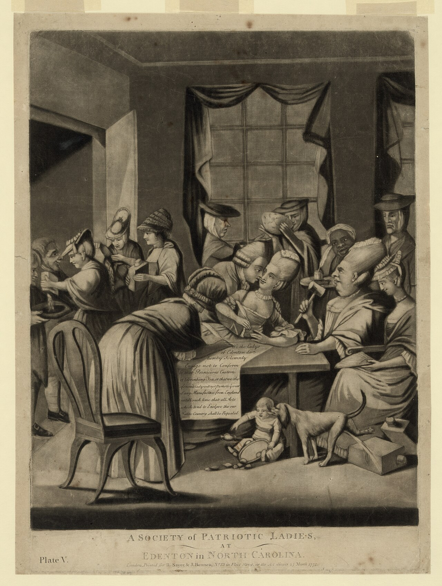

Directions: Fill in the chart as we study each part of the lesson. Keep this page in your notebook. You will use it again on the review day before the unit test.

| The war's peoples | What the war offered them | What the war cost them | What stood after 1783 |
|---|---|---|---|
| Women: home front and camps | |||
| Black Americans | |||
| The Haudenosaunee | |||
| Loyalists | |||
| The enslaved who petitioned |
The war's peoples in one paragraph. Using at least three rows of the chart, write a paragraph that answers the lesson question. Who else fought, paid, and waited through the war, and what did its promise mean to them?
| The war's peoples | What the war offered them | What the war cost them | What stood after 1783 |
|---|---|---|---|
| Women: home front and camps | The running of farms, shops, and the armies' camps, a public political stage in boycott resolves like Edenton's of October 1774, and for a few, a soldier's place, as Sampson took it in 1782. | The war's labor at little or no pay, the dangers of camp and battlefield, and refusal where they asked for standing, as Abigail Adams was refused in 1776. | The work remembered more than the claims. Husbands' legal power stood in the new state codes, and the Edenton signers were remembered first through a British satire. |
| Black Americans | Two competing roads: Dunmore's offer of freedom for bearing arms for the king from November 1775, and American enlistment once the ban on Black soldiers gave way. | Smallpox and fever in Dunmore's camps killed most of his recruits, and flight to British lines was a gamble taken family by family under pursuit. | Some three thousand Black Loyalists left in the evacuation, their freedom recorded in the Book of Negroes, and some five thousand Black men had served the United States, by the standard estimate, with freedom claims earned in service. |
| The Haudenosaunee | An alliance, with Britain for most nations and with the Americans for the Oneida and Tuscarora, meant to shield their land and their self government. | The Confederacy split, and in 1779 the Sullivan expedition burned about forty Seneca and Cayuga towns and their corn, driving thousands to a starving winter at Niagara. | In the peace of 1783 Britain ceded Haudenosaunee land to the United States without Haudenosaunee consent, and land loss, not the alliance, set the terms after the war. |
| Loyalists | The king's order left standing, protection for property and office, and regiments of their own in British service. | Test oaths, tarring and feathering, confiscation of estates, and banishment during the war, in a conflict that in the South was in part a civil war. | Some sixty thousand or more left the United States at the peace, an estimate, for Canada, Britain, Florida, and the Caribbean, many of them starting over with little. |
| The enslaved who petitioned | A hearing in the era's own language: the Massachusetts petition of January 13, 1777 argued a natural and unalienable right to freedom before the legislature itself. | No act passed on their petition, and freedom, where it came in the North, came slowly, by gradual statutes and court cases rather than at once. | Vermont's constitution of 1777, Pennsylvania's gradual act of 1780, and the Massachusetts courts' decisions of 1783 began the North's emancipation, while slavery stood untouched across the South. |
The war's peoples in one paragraph. Strong answers run the chart as one account. The war was fought by more peoples than its two armies: by women who ran the home front and the camps and who claimed a political voice at Edenton and in Abigail Adams's letter; by Black Americans who weighed a British freedom offer against an American cause that first barred them; by Haudenosaunee nations who chose their alliances to shield their land and paid for the choice in burned towns; by Loyalists who lost homes and country for the king's order; and by enslaved petitioners who quoted the era's promises back at its makers. Its promise meant most where people could seize it in arms or in print, and least where it was answered with a laugh, a refusal, or a cession signed by someone else.